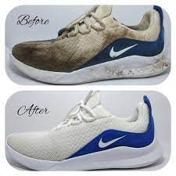

REPAIR
Less Waste In The Neighborhood
Definisi
tahap ini yaitu dengan memperbaiki barang yang rusak. melakukan sesuatu agar masa pakai barang yang kita miliki dapat diperpanjang, dengan demikian kebutuhan untuk membeli barang yang baru menjadi berkurang.
Solusi
Memperbaiki sepatu yang rusak, dengan begitu kita tidak perlu membeli sepatu yang baru dan membuang sepatu lama menjadi sampah
Menjahit kembali celana yang robek sehingga dapat digunakan kembali dan tidak perlu membeli celana baru
Memperbaiki peralatan elektronik yang rusak agar dapat digunakan kembali.
Menambal ban sepeda sehingga dapat digunakan kembali dan tidak perlu membeli yang baru
